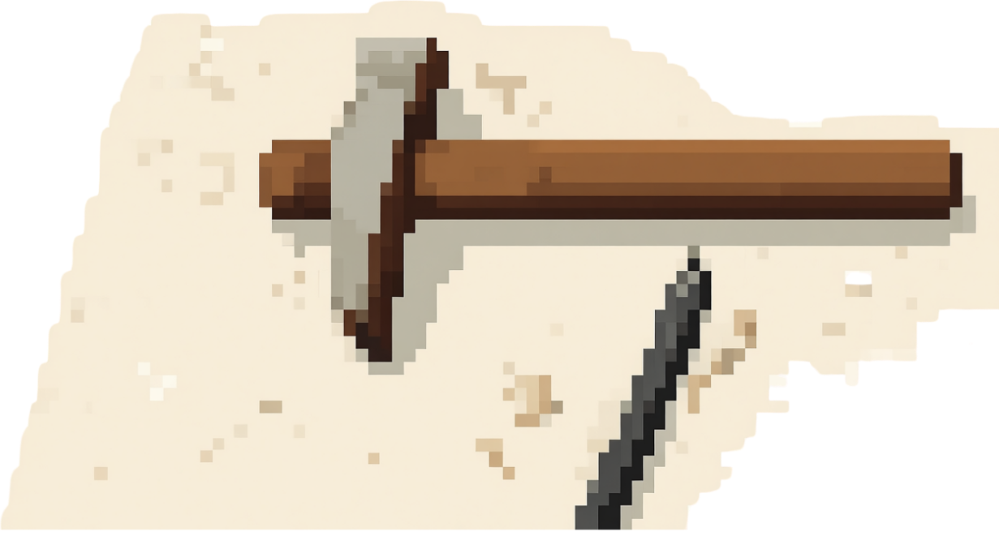

Week 1
Old tech never dies — comparing competing innovations

Activity 1 — Comparison.
Create a table, chart, or diagram comparing each pair. For each technology, identify: (a) what it adds — new capabilities, speed, scale, or reach; (b) what it deletes — costs, skills, constraints, or affordances lost; and (c) the conditions under which it outperforms its counterpart.
| Wheel | Foot | |
|---|---|---|
| What it adds - new capabilities, speed, scale, or reach | Reduced friction: The cost of transport (CoT) is a lot lower when using wheels (Tucker, 1975). Even on a bicycle active muscles are not stretched and thus as efficient as swimming or flying animals.
One source of torque (engine/animals) spins a set of wheels which can support a lot of weight while moving forward. Multiple people can be transported at the same time. Human energy expenditure is a lot lower, speed and distance are a major addition. |
Ability to turn sharply, climb, use narrow pathways, move on all terrains, including swimming in water, moving inside buildings (reach)
Exercise: Moving positively impacts human health (Raichlen et al., 2020). |
| What it deletes - costs, skills, constraints, or affordances lost | Costs: Inactivity negatively impacts human health (Raichlen et al., 2020).
Constraints: The ability to reach off road terrain, such as climbing up. Skills: Connection to nature and looking after the environment (Nisbet et al., 2009) Costs: Initial purchase of car, bike, wheelchair, skateboard, etc. and fuel if needed |
Constraints: speed and possible travel distance; exhaustion
Costs: Body fuel (carbohydrates, fat and protein) Affordances lost: Injuries |
| The conditions under which it outperforms its counterpart | Smooth surfaces (roads), harsh weather (hot, cold, storm), long distances, fast transport, transporting several people at the same time, mobility of disabled people, unlimited funds | Narrow passages, rough surfaces, water, inside buildings, limited funds, limited parking, traffic congestion, diesel shortage, visually impaired people, no driver's license (car) |
| Pen (on paper/parchment) | Chisel (on stone/clay) | |
|---|---|---|
| What it adds - new capabilities, speed, scale, or reach | Only minor effects on the economy compared to chisel in stone (Innis, 2008).
Separation of the word from the living present (oral communication) (Ong, 1982). Literacy: Conscious rules and languages derive from putting thoughts on paper (Ong, 1982). Ong (1982) argues that to live fully and understand fully (abstract thinking), humans need to write (cognitive offloading) (p. 81). Words are more diverse than pictographs (Ong, 1982). Space and time saving. |
Reach: Heavy and durable (Innis, 2008). Examples are stone monuments, such as pyramids, that endure over time. |
| What it deletes - costs, skills, constraints, or affordances lost | Cost: perishable medium (Innis, 2008).
Ong (1982) argues that writing is fully artificial (p. 81) and restructures human consciousness. Without cognitive offloading, the memory was trained constantly. Writing takes this away, which leads to unresponsiveness to questions and destruction of memory (Ong, 1982, p. 25). |
Cost: Time and space.
Slow to produce and taking up a lot of space (Innis, 2008). He describes the cost of labour, resource drain and subsequent social instability (e.g. Egypt). Dependency on oral communication (Innis, 2008). |
| The conditions under which it outperforms its counterpart | Time and space constraint, cognitive offloading, freeing memory space, reaching society | Resistance to environmental decay, irreversibility (which signals importance or authority), cannot be altered without physical evidence |